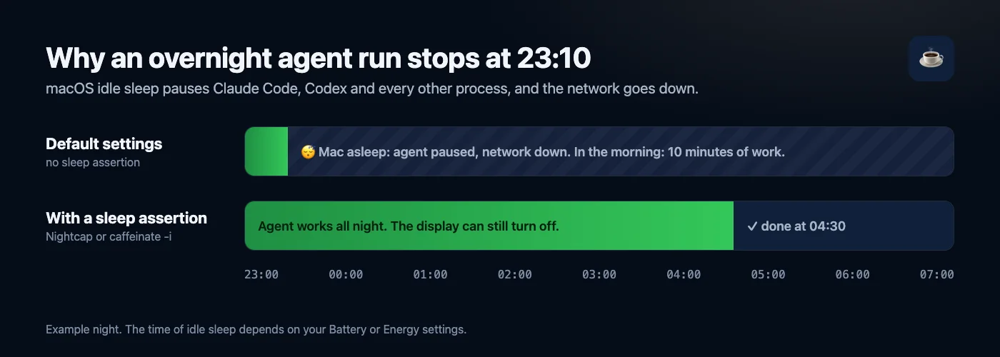
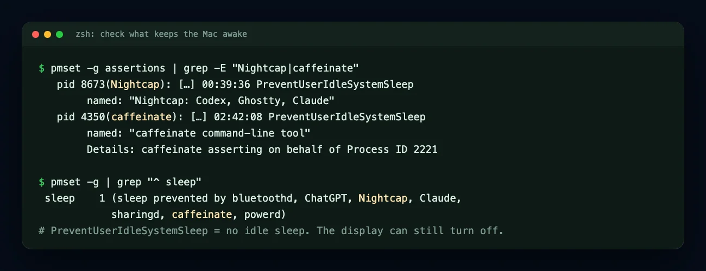

Developer tools · macOS
Keep your Mac awake while Claude Code or Codex runs overnight
You start a long agent task, go to bed, and in the morning it did ten minutes of work. Here is why, and three ways to stop it.

Short answer. For one terminal session, start the agent with caffeinate -i claude (or caffeinate -i codex). If you use the Codex or Claude desktop apps, or many terminal tabs, use Nightcap Awake: it keeps the Mac awake while the apps you pick run. Connect power. Do not close the lid, except in Apple's closed-display mode.
Why Claude Code stops when the Mac sleeps
When nobody touches the Mac, macOS turns off the display, and then the system goes to idle sleep. In sleep, the CPU stops every process. Claude Code, Codex, a build and a download all pause. The Wi-Fi connection also goes down, so a request to the model that was open at that time can fail.
A locked screen or a screen saver does not cause this. Only sleep does. To stop idle sleep, a program creates a power assertion. This is a request to macOS that says "do not idle sleep now". The three ways below all make this request in a different way.
Way 1: the caffeinate command
caffeinate is built into macOS, in /usr/bin. The man page says that when you give it a command, it holds the assertion "for the duration of the utility's execution". So start the agent with it:
caffeinate -i claude # Claude Code
caffeinate -i codex # Codex CLI
caffeinate -is claude # on AC power: also add -s (system sleep)When the agent exits, caffeinate exits too, and normal sleep comes back. If the agent already runs, open a new tab and run caffeinate -i with no command. It holds the assertion until you press Control-C. To stop when a process ends, give its ID: caffeinate -i -w <pid>.
| Flag | What it blocks | Use it for an agent? |
|---|---|---|
-i | Idle system sleep. This is the default when you give no flag. | Yes. This is the one you need. |
-s | System sleep. Valid only on AC power. | Optional, with -i. |
-d | Display sleep. | No. The display can turn off. |
-m | Disk idle sleep. | Usually not needed. |
-u | Declares that a user is active. It turns the display on. Default timeout of 5 seconds. | No. |
-t <sec> | Releases the assertion after a timeout. Ignored when you give a command. | Only for a fixed time. |
-w <pid> | Releases the assertion when that process exits. | Yes, for an agent that already runs. |
Many guides copy caffeinate -dimsu. It keeps the display on all night too. For an agent, -i is enough.
Limits. You must remember it before each run. If you close the terminal tab, caffeinate ends. It does not help the Codex or Claude desktop apps, because they do not start from a terminal.
Way 2: Nightcap Awake, by app
Nightcap Awake is my free menu bar app for this job. You pick apps once. While one of them runs, Nightcap holds the same idle-sleep assertion as caffeinate -i. When the last watched app quits, Nightcap releases it.

- Install it from the Mac App Store, or run
brew install --cask Abdo-codes/tap/nightcap. - Click the cup in the menu bar and choose Add App….
- Add the app that runs the agent. For Claude Code or the Codex CLI, add your terminal: Ghostty, Terminal or iTerm. For the desktop apps, add Codex or Claude.
- Turn on Launch at Login. Nightcap then works after each restart.
Know this before you use it. Nightcap watches apps, not one command. If your terminal stays open after the agent finishes, the Mac stays awake until you quit the terminal. To keep the terminal open and allow sleep, pause it in the Nightcap menu. Nightcap does not keep the display on, and it does not work with the lid closed. It is sandboxed, has no analytics and no network access, and needs macOS 14 or later. The source is on GitHub under the MIT license.
Way 3: a System Settings switch
macOS has a setting that stops sleep when the display is off. On a MacBook, open System Settings, Battery, Options and turn on "Prevent automatic sleeping on power adapter when the display is off". On a desktop Mac, the setting is in Energy. Apple describes it in Set sleep and wake settings for your Mac.
This is the simplest way, but it is on all the time while the Mac has power. Apple says that it can increase power use. If you agree with that, it is a good choice for a desktop Mac that runs agents every night.
Can I keep a MacBook awake with the lid closed?
Not with caffeinate -i, Nightcap or the setting above. A MacBook sleeps when you close the lid, even with an idle-sleep assertion. There are two ways that work:
- Closed-display mode. Connect power, an external display, and an external keyboard or mouse. Then close the lid. Apple explains it in Use your Mac notebook computer in closed-display mode. On Apple silicon, allow the accessories to connect first, in Privacy & Security.
- Amphetamine with its helper. Amphetamine offers closed-lid sessions with a separate download. See my Nightcap Awake vs Amphetamine comparison for the details.
Do not put a running MacBook in a bag. With sleep blocked, it gets hot.
Check what keeps your Mac awake
Before you go to bed, check that the assertion is there. pmset shows every process that blocks sleep:

pmset -g assertions | grep -E "Nightcap|caffeinate"
pmset -g | grep "^ sleep"Look for PreventUserIdleSystemSleep. The second command lists each process that blocks sleep now. If the list is empty, the Mac will sleep.
Which way to use
| Way | Best for | Stops by itself | Lid closed |
|---|---|---|---|
caffeinate -i claude | One terminal session that you start yourself | Yes, when the agent exits | No |
| Nightcap Awake | Desktop apps, many tabs, and people who forget caffeinate | Yes, when the watched apps quit | No |
| System Settings switch | A desktop Mac that runs agents every night | No, it is always on | No |
| Amphetamine | Schedules, triggers and closed-lid sessions | Yes, with triggers | Yes, with its helper |
Other things that stop a night run
Sleep is the most common cause, but it is not the only one.
- An approval prompt. The agent waits for you to allow a command or a file edit. Set the permissions for the task before you leave.
- The battery. A blocked sleep on battery empties it. Connect power.
- Updates. A macOS update can restart the Mac at night. Check Software Update before a long run.
- A full disk. Builds stop when the disk is full. My DerivedData guide shows what is safe to delete.
Questions
Does Claude Code keep running when my Mac sleeps? No. Sleep pauses every process and the network goes down. The agent continues only after the Mac wakes.
What is the caffeinate command for Claude Code? caffeinate -i claude. For the Codex CLI, use caffeinate -i codex.
Can the display sleep while the agent runs? Yes. caffeinate -i and Nightcap block idle system sleep only.
Can I keep a MacBook awake with the lid closed? Only in closed-display mode (power, an external display and an external keyboard or mouse), or with Amphetamine and its helper.
Does a locked screen stop the agent? No. A locked screen or a screen saver does not stop processes.
Is Nightcap Awake free? Yes. No account, no ads and no in-app purchases. It is open source under the MIT license.